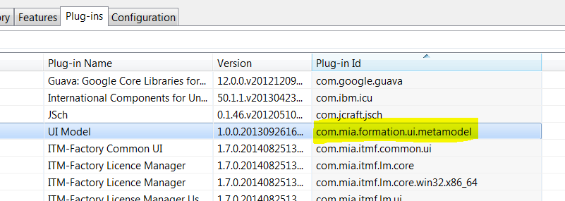
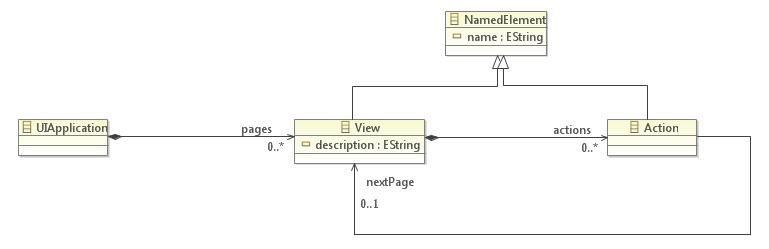

Exercice 0.1
Recuperer et Preparer les composants des TDs
- Recuperer et installer le metamodele ui (par exemple le deposer dans /dropins de l'install mia-studio ou eclipse). Verifier sa bonne prise en compte après redemmarrage eclipse (voir plugins installés dans "help>about")
- Alma2016\TD-Mia-Studio9\Inputs\metamodel\com.mia.formation.ui.metamodel_xx.jar
- Se mettre dans la perspective Eclipse "Mia-Studio Edition".
- Initier dans le workspace un projet Java vide "com.mia.formation.generation.ui" (Servira comme conteneur des fichiers générés)
- Creer et sauvegarder dans le workspace un projet Mia-Studio "org.formation.generation" (contiendra le generateur)
- Creer et sauvegarder un package Mia-Studio "org.formation.generation.swt" dans le projet, basé sur le méta-modèle "UI". Ce package contiendra les scripts définis dans les TDs.
- Récuperer le modèle d'exemple banque.ui et le positionner dans un sous-repertoire "models" de "org.formation.generation"

